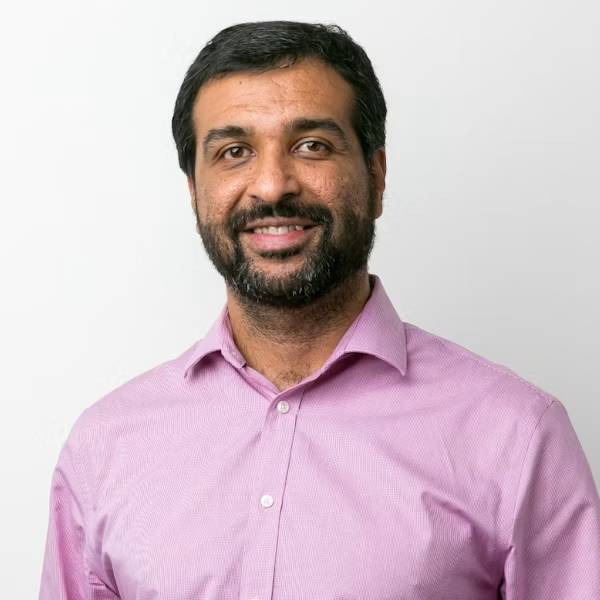

Motivada pelo propósito de ajudar um bilhão de pessoas a encontrar o trabalho certo, a Mahe foi pioneira na categoria de experiência do talento há mais de 14 anos, trazendo experiências personalizadas e de nível de consumidor para o RH.
Aceder
Anshika Srivastava é cofundadora e COO da Apoha, uma empresa de tecnologia avançada, e ex-funcionária do Goldman Sachs. Ela é pioneira em Inteligência de Estado Líquido – a camada de dados para IA física que permite às máquinas perceberem como a matéria se comporta.
Aceder